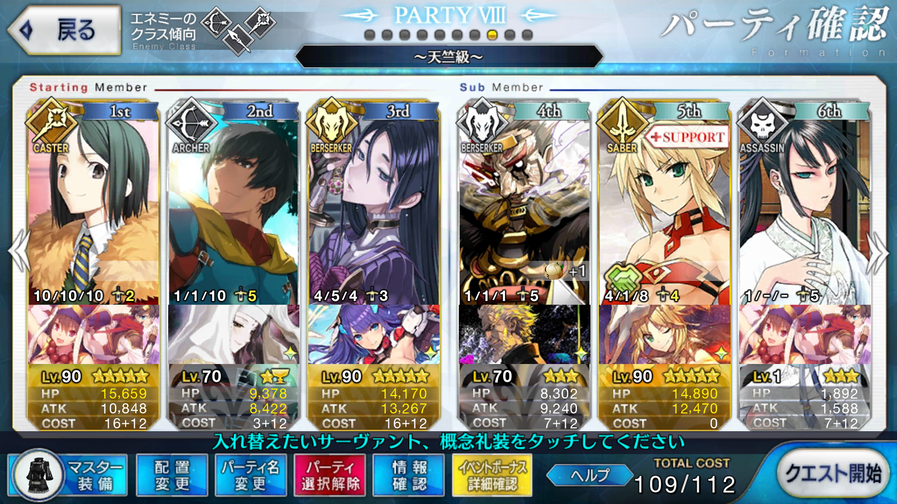

<!DOCTYPE HTML>
<html>
<head><meta name="generator" content="Hexo 3.9.0">
  <meta charset="utf-8">
  
  <title>【FGO】復刻：星の三蔵ちゃん、天竺に行く ライト版 天竺級 | ぷらずま式改</title>
  <meta name="author" content="NPlasma">

  
  <meta name="description" content="NPlasmaの個人メモ">
  

  

  <meta name="viewport" content="width=device-width, initial-scale=1, maximum-scale=1">

  <meta property="og:title" content="【FGO】復刻：星の三蔵ちゃん、天竺に行く ライト版 天竺級">
  <meta property="og:site_name" content="ぷらずま式改">

  
  

  
    <meta property="og:image" content="/img/ogp.png">
  

  
  <link href="/nplus_doc/css/images/favicon.ico" rel="icon">
  

  <link rel="alternate" href="/nplus_doc/atom.xml" title="ぷらずま式改" type="application/atom+xml">
  <link rel="stylesheet" href="/nplus_doc/css/style.css" media="screen" type="text/css">
  <!--[if lt IE 9]><script src="//html5shiv.googlecode.com/svn/trunk/html5.js"></script><![endif]-->
  


  <link rel="apple-touch-icon" sizes="180x180" href="/favicon/apple-touch-icon.png">
  <link rel="icon" type="image/png" sizes="32x32" href="/favicon/favicon-32x32.png">
  <link rel="icon" type="image/png" sizes="16x16" href="/favicon/favicon-16x16.png">
  <link rel="manifest" href="/favicon/site.webmanifest">
  <link rel="mask-icon" href="/favicon/safari-pinned-tab.svg" color="#5bbad5">
  <meta name="msapplication-TileColor" content="#da532c">
  <meta name="theme-color" content="#ffffff">
</head>
</html>

<body>
  <header id="header" class="inner"><div class="alignleft">
  <h1><a href="/nplus_doc/">ぷらずま式改</a></h1>
  <h2><a href="/nplus_doc/">NPlasma個人メモ</a></h2>
</div>
<nav id="main-nav" class="alignright">
  <ul>
    
      <li><a href="/">Home</a></li>
    
      <li><a href="/nplus_doc/2016/05/29/about/">About</a></li>
    
      <li><a href="https://twitter.com/elleonard_f">Twitter</a></li>
    
      <li><a href="https://github.com/elleonard">GitHub</a></li>
    
  </ul>
  <div class="clearfix"></div>
</nav>
<div class="clearfix"></div></header>
  <div id="content" class="inner">
    <div id="main-col" class="alignleft"><div id="wrapper"><article class="post">
  
  <div class="post-content">
    <header>
      
        <div class="icon"></div>
        <time datetime="2018-04-21T13:24:52.000Z"><a href="/nplus_doc/2018/04/21/game/fate/fgo/go-west/india/">2018-04-21</a></time>
      
      
  
    <h1 class="title">【FGO】復刻：星の三蔵ちゃん、天竺に行く ライト版 天竺級</h1>
  

    </header>
    <div class="entry">
      
        <div id="toc" class="toc-article">
          <p class="toc-title">目次</p>
          <ol class="toc"><li class="toc-item toc-level-1"><a class="toc-link" href="#基本方針"><span class="toc-text">基本方針</span></a></li><li class="toc-item toc-level-1"><a class="toc-link" href="#ドロップアイテム"><span class="toc-text">ドロップアイテム</span></a></li><li class="toc-item toc-level-1"><a class="toc-link" href="#エネミー構成"><span class="toc-text">エネミー構成</span></a></li><li class="toc-item toc-level-1"><a class="toc-link" href="#編成例"><span class="toc-text">編成例</span></a></li><li class="toc-item toc-level-1"><a class="toc-link" href="#周回用キャラ選別"><span class="toc-text">周回用キャラ選別</span></a><ol class="toc-child"><li class="toc-item toc-level-2"><a class="toc-link" href="#アーラシュ-スパルタクス"><span class="toc-text">アーラシュ/スパルタクス</span></a></li><li class="toc-item toc-level-2"><a class="toc-link" href="#メドゥーサ"><span class="toc-text">メドゥーサ</span></a></li><li class="toc-item toc-level-2"><a class="toc-link" href="#孔明"><span class="toc-text">孔明</span></a></li><li class="toc-item toc-level-2"><a class="toc-link" href="#呂布"><span class="toc-text">呂布</span></a></li><li class="toc-item toc-level-2"><a class="toc-link" href="#坂田金時（騎）"><span class="toc-text">坂田金時（騎）</span></a></li><li class="toc-item toc-level-2"><a class="toc-link" href="#エルドラドのバーサーカー"><span class="toc-text">エルドラドのバーサーカー</span></a></li><li class="toc-item toc-level-2"><a class="toc-link" href="#ドレイク"><span class="toc-text">ドレイク</span></a></li><li class="toc-item toc-level-2"><a class="toc-link" href="#オジマンディアス"><span class="toc-text">オジマンディアス</span></a></li><li class="toc-item toc-level-2"><a class="toc-link" href="#源頼光（狂）"><span class="toc-text">源頼光（狂）</span></a></li><li class="toc-item toc-level-2"><a class="toc-link" href="#スカサハ（槍）"><span class="toc-text">スカサハ（槍）</span></a></li></ol></li></ol>
        </div>
        <p>この記事ではFGOイベントの周回を扱います。</p>
<p>編成画像にて最終再臨絵のネタバレがあるのでご注意を</p>
<a id="more"></a>
<h1 id="基本方針"><a href="#基本方針" class="headerlink" title="基本方針"></a>基本方針</h1><ul>
<li>3T周回する</li>
<li>可能な限りドロップ追加礼装を搭載する</li>
</ul>
<h1 id="ドロップアイテム"><a href="#ドロップアイテム" class="headerlink" title="ドロップアイテム"></a>ドロップアイテム</h1><ul>
<li>金丹</li>
<li>仙桃</li>
<li>肉まん</li>
<li>蛮神の心臓</li>
<li>術の秘石</li>
</ul>
<h1 id="エネミー構成"><a href="#エネミー構成" class="headerlink" title="エネミー構成"></a>エネミー構成</h1><ul>
<li>デーモン系</li>
<li>カルナ</li>
<li>アルジュナ</li>
</ul>
<h1 id="編成例"><a href="#編成例" class="headerlink" title="編成例"></a>編成例</h1><p></p>
<p>オダチェンなし</p>
<p>1wは素のステラでは撃ち漏らしがち<br>バフを盛るか、凸菩薩で威力を上げて孔明のスキル2でNPを10だけ割り振る</p>
<p>2wは凸カレスコ呂布で吹き飛ばす<br>スキル育成も銀フォウもさっぱりだが、それでも孔明と自身のバフを盛れば2wを突破できる<br>撃ち漏らすこともあるが、追撃があれば特に問題にはならない<br>特攻対象に拘らなければ呂布以外の単体宝具ライダー/バーサーカーでも良い</p>
<p>3w担当は頼光<br>スキル育成や礼装のレベルが半端なため、アルジュナを撃ち漏らす<br>バーサーカーで追撃できれば十分に倒せる<br>礼装レベル次第では、2004年の断片か、アニバーサリー・ブロンドのほうが安定するかもしれない</p>
<h1 id="周回用キャラ選別"><a href="#周回用キャラ選別" class="headerlink" title="周回用キャラ選別"></a>周回用キャラ選別</h1><h2 id="アーラシュ-スパルタクス"><a href="#アーラシュ-スパルタクス" class="headerlink" title="アーラシュ/スパルタクス"></a>アーラシュ/スパルタクス</h2><p>いつもの<br>バーサーカーであるスパルタクスならともかく、アーラシュの場合はやや準備がいる<br>1wはそこそこHPが多いので聖杯や銀フォウを積んでも凸虚数だけでは突破しきれないことがある</p>
<h2 id="メドゥーサ"><a href="#メドゥーサ" class="headerlink" title="メドゥーサ"></a>メドゥーサ</h2><p>カレスコ＋自身のスキルでNP100を達成できる全体宝具ライダー<br>アーラシュやスパルタクスの代わりに1wを担当できるが、スパルタクスが育っていればそちらのほうが良いだろう<br>残念ながらドロップ特攻は大蓮華であり、天竺級では役に立たない</p>
<h2 id="孔明"><a href="#孔明" class="headerlink" title="孔明"></a>孔明</h2><p>普段は特筆するまでもない孔明だが、金丹のドロップ追加もあり、今回はいつにも増してマーリンよりも優先度が上がる</p>
<h2 id="呂布"><a href="#呂布" class="headerlink" title="呂布"></a>呂布</h2><p>肉まんドロップ数アップ<br>NPさえなんとかしてやれば、2種の自己バフで2wをきっちり片付けてくれる<br>スキル育成なしでも十分に活躍できるところも良い</p>
<h2 id="坂田金時（騎）"><a href="#坂田金時（騎）" class="headerlink" title="坂田金時（騎）"></a>坂田金時（騎）</h2><p>2w担当<br>NP+50持ちの単体宝具ライダー</p>
<h2 id="エルドラドのバーサーカー"><a href="#エルドラドのバーサーカー" class="headerlink" title="エルドラドのバーサーカー"></a>エルドラドのバーサーカー</h2><p>2wまたは3wの片割れ処理と全体へのバフを担当する<br>自身のNP増加スキルはもちろん、全体への2種のバフが心強い</p>
<h2 id="ドレイク"><a href="#ドレイク" class="headerlink" title="ドレイク"></a>ドレイク</h2><p>NP+50持ちの全体宝具ライダー<br>凸カレスコと孔明で1w2w連続で宝具を放てる</p>
<p>星5であり礼装も固定されるため、コストが重めというのが難点か</p>
<h2 id="オジマンディアス"><a href="#オジマンディアス" class="headerlink" title="オジマンディアス"></a>オジマンディアス</h2><p>全体にNPを20配れる単体宝具ライダー<br>2wをすっ飛ばすには便利で、カリスマでの全体バフも強力</p>
<h2 id="源頼光（狂）"><a href="#源頼光（狂）" class="headerlink" title="源頼光（狂）"></a>源頼光（狂）</h2><p>クラス混成の難敵を吹き飛ばすいつものお方<br>スキル2,3のレベルを上げておくと安定感が増すだろう</p>
<h2 id="スカサハ（槍）"><a href="#スカサハ（槍）" class="headerlink" title="スカサハ（槍）"></a>スカサハ（槍）</h2><p>神性特攻持ちの単体宝具ランサー<br>3wでクリティカル込みの宝具＋ブレイブチェインを放てればインド兄弟をまとめて処理できる</p>

      
    </div>
    
    <footer>
        <div class="alignright">
            <a href="https://twitter.com/share?ref_src=twsrc%5Etfw" class="twitter-share-button" data-text="【FGO】復刻：星の三蔵ちゃん、天竺に行く ライト版 天竺級" data-url="http://elleonard.github.io/nplus_doc/2018/04/21/game/fate/fgo/go-west/india/" data-via="elleonard_f" data-show-count="false">Tweet</a><script async src="https://platform.twitter.com/widgets.js" charset="utf-8"></script>
        </div>
        
  
  <div class="categories">
    <a href="/nplus_doc/categories/FGO/">FGO</a>
  </div>

        
  
  <div class="tags">
    <a href="/nplus_doc/tags/ゲーム/">ゲーム</a>, <a href="/nplus_doc/tags/Fate/">Fate</a>, <a href="/nplus_doc/tags/Fate-GrandOrder/">Fate/GrandOrder</a>, <a href="/nplus_doc/tags/FGO/">FGO</a>, <a href="/nplus_doc/tags/FGO天竺/">FGO天竺</a>
  </div>

        
          <div class="article-prev">
              <a href="/nplus_doc/2018/04/27/game/neptunia/neptunia-rebirth2/">【ゲーム感想】超次次元ゲイム ネプテューヌRe;Birth2 SISTERS GENERATION <span class="prev-arrow"/></a>
            </div>
        
        
          <div class="article-next">
            <a href="/nplus_doc/2018/04/21/game/fate/fgo/go-west/budda/">【FGO】復刻：星の三蔵ちゃん、天竺に行く ライト版 如来級 <span class="next-arrow"/></a>
          </div>
        
        <!-- partial('post/share') -->
      <div class="clearfix"></div>
    </footer>
  </div>
</article>


</div></div>
    <aside id="sidebar" class="alignright">
  <div class="search">
  <form action="//google.com/search" method="get" accept-charset="utf-8">
    <input type="search" name="q" results="0" placeholder="検索">
    <input type="hidden" name="q" value="site:elleonard.github.io/nplus_doc">
  </form>
</div>

  
<div class="widget tag">
  <h3 class="title">カテゴリ</h3>
  <ul class="entry">
  
    <li><a href="/nplus_doc/categories/FGO/">FGO</a><small>47</small></li>
  
    <li><a href="/nplus_doc/categories/niconico/">niconico</a><small>3</small></li>
  
    <li><a href="/nplus_doc/categories/アニメ感想/">アニメ感想</a><small>9</small></li>
  
    <li><a href="/nplus_doc/categories/ゲーム/">ゲーム</a><small>40</small></li>
  
    <li><a href="/nplus_doc/categories/ゲーム/ゲームレビュー/">ゲームレビュー</a><small>29</small></li>
  
    <li><a href="/nplus_doc/categories/ゲーム制作/">ゲーム制作</a><small>5</small></li>
  
    <li><a href="/nplus_doc/categories/遊戯王ブロンティーズ/デッキレシピ/">デッキレシピ</a><small>4</small></li>
  
    <li><a href="/nplus_doc/categories/ライトノベル/">ライトノベル</a><small>2</small></li>
  
    <li><a href="/nplus_doc/categories/情報技術/">情報技術</a><small>11</small></li>
  
    <li><a href="/nplus_doc/categories/漫画/">漫画</a><small>2</small></li>
  
    <li><a href="/nplus_doc/categories/百合/">百合</a><small>5</small></li>
  
    <li><a href="/nplus_doc/categories/艦これ/">艦これ</a><small>76</small></li>
  
    <li><a href="/nplus_doc/categories/遊戯王ブロンティーズ/">遊戯王ブロンティーズ</a><small>4</small></li>
  
    <li><a href="/nplus_doc/categories/雑記/">雑記</a><small>4</small></li>
  
  </ul>
</div>


  
<div class="widget tag">
  <h3 class="title">最近の投稿</h3>
  <ul class="entry">
    
      <li>
        <a href="/nplus_doc/2019/09/13/engineering/hexo-table-render/">【新】HexoのMarkdownで複雑な表を書く</a>
      </li>
    
      <li>
        <a href="/nplus_doc/2019/05/09/game/edf/edf4-1/">【ゲーム感想】地球防衛軍4.1 THE SHADOW OF NEW DESPAIR</a>
      </li>
    
      <li>
        <a href="/nplus_doc/2019/04/27/game/chokaigi2019-taiken/">ニコニコ超会議2019 インディーズゲームショーケース＆プレイコーナー 感想</a>
      </li>
    
      <li>
        <a href="/nplus_doc/2019/03/02/game/kancolle/season2/3-4/">【艦これ】【第二期】3-4 北方海域全域</a>
      </li>
    
      <li>
        <a href="/nplus_doc/2019/02/26/game/atelier/nelke/">【ゲーム感想】ネルケと伝説の錬金術士たち ～新たな大地のアトリエ～</a>
      </li>
    
  </ul>
</div>

</aside>
    
    <div class="clearfix"></div>
  </div>
  <footer id="footer" class="inner"><div class="alignleft">
  <p>
  
  &copy; 2019 NPlasma
  
  All rights reserved.</p>
  <p>Powered by <a href="http://hexo.io/" target="_blank">Hexo</a></p>
</div>
<div class="clearfix"></div>
</footer>
  <script src="/nplus_doc/js/jquery.imagesloaded.min.js"></script>
<script src="/nplus_doc/js/gallery.js"></script>


<link rel="stylesheet" href="/nplus_doc/fancybox/jquery.fancybox.css" media="screen" type="text/css">
<script src="/nplus_doc/fancybox/jquery.fancybox.pack.js"></script>
<script type="text/javascript">
(function($){
  $('.fancybox').fancybox();
})(jQuery);
</script>


<div id='bg'></div>
</body>
</html>
